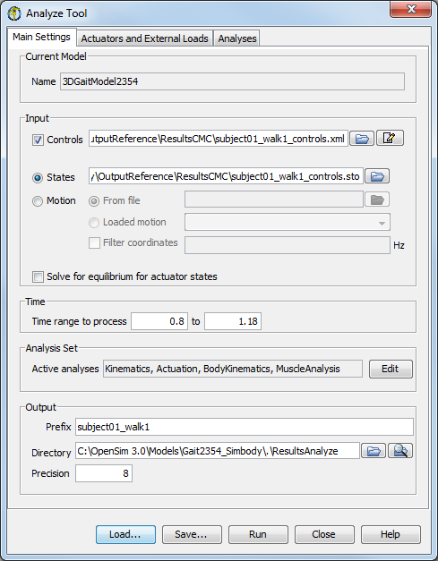
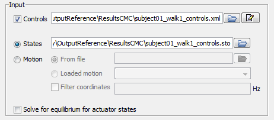
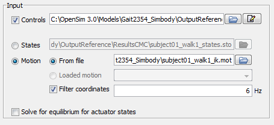
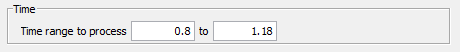
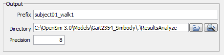
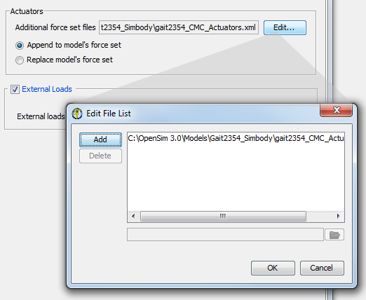
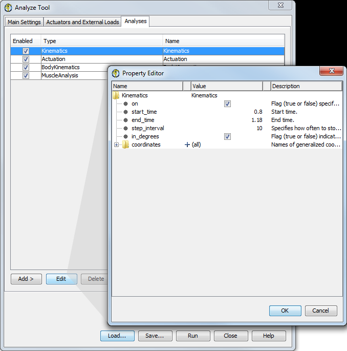

The topics covered in this section include:
The Analyze Tool is accessed by selecting Tools -> Analyze… from the OpenSim main menu bar. Like all tools, the operations performed by the Analyze Tool apply to the current model. The name of the current model is shown in bold in the Navigator. See Opening, Closing, and Using the Navigator Window for information on opening models and making a particular model current. The Analyze Tool consists of three panes: Main Settings, Actuators and External Loads, and Analyses. Shown is the Main Settings pane.
|  | The Main Settings pane is used to specify parameters relating to the input, the time range over which the analyses are to be run, which analyses are to be run, and the output. The Actuators and External Loads pane is used to specify parameters relating to the external loads applied to the model during analysis and whether or not an additional set of actuators should be added to the model. The Analyses pane provides a means of adding, removing, and editing the analyses that will be run.
|
|---|
At the bottom of all the Tool dialog windows are four buttons, located in what we call the Control Panel.
 | - The Load and Save buttons are used to load or save settings for the tool.
- The Run button starts execution.
- The Close button closes the window.
- The Help button takes you to the relevant section of the User Guide.
 | Note that the Close button can be clicked immediately after execution has begun; the execution will complete even though the window has been closed. |
- If you click Load…, you will be presented with a file browser that displays all files ending with the .xml suffix. You may browse for an appropriate settings file (e.g., subject01_Forward_Setup.xml or subject01_Scale_Setup.xml)) and click Open. The tool will then be populated with the settings in that setup file.
- If you have manually entered or modified settings, you may save those settings to a file for future use. If you click Save…, a Save dialog box will come up in which you can specify the name of the settings file. The name you specify for the file should have a suffix of .xml. Click Save to save the settings to file.
After you click Save, you may be presented with another dialog box that asks you whether or not you would like to save some of the settings to separate external files. This can be useful if you would like to reuse those settings for other trials or subjects. Check the boxes of the settings that you'd like to save to external files and specify the names of these files. All of these files should have a suffix of .xml.
|
|---|
Main Settings Pane
The Main Settings pane (figure above) is used to specify parameters relating to input, the time range over which analyses are to be performed, which analyses are to be performed, and the output. The pane is organized into five main sections entitled Current Model, Input, Time, Analysis Set, and Output.
 | |
|---|
|  | - The section for Input displays editable information that allows you to specify the controls, states or motion, and whether or not to solve for force equilibrium for the actuator forces.
- If you are running an analysis on an existing simulation, you will most often specify a set of controls and states output by that simulation.
- You may use the folder button to browse for the input files.
|
|  | - If you would like to run a set of analyses based on experimentally recorded motion, you may use the
 radio button to select Motion as the input type. radio button to select Motion as the input type. - If you choose to run the analyses from Loaded motion, you will need to choose a motion from the drop down list.
|
|  | - The section for Time displays editable information that allows you to specify the start and end time for the analysis.
|
|  | - The section for Output displays editable information that allows you to specify the prefix appended to the resulting output file, the directory to which the file is saved, and the precision of the decimal places used when writing results.
- You may use the folder button to browse for and specify a directory in which to save the output files.
- You may use the folder/magnifying glass button to open an Explorer window to the specified directory.
|
The Actuators and External Loads pane (figure below) is used to specify parameters relating to the actuators appended to the model and the external loads applied to the model during the analyses. The pane is organized into two main sections entitled Actuators and External Loads.
 | The section for Actuators displays editable information that allows you to specify additional actuator set files that specify actuators to supplement the muscles of the model. You may use the Edit button to edit the list of actuator set files describing the actuators to be appended to or replaced in the model.
|
|---|
|  | - The information in the External Loads section is optional.
- If checked, the section displays information so that you can specify the external loads applied to the model, the bodies of the model to which the loads are applied, and the corresponding kinematics of the external loads.
- Additionally, there is an option to filter the kinematics for the external loads by selecting the checkbox next to Filter kinematics and entering the filter frequency.
|
The analyses pane lets you add and edit analyses (Muscle Analysis, Joint Reaction Analysis, Induced Acceleration Analysis, etc.)

{kind=link}
{kind=link}
{kind=link}
{kind=link}
{kind=link}
{kind=link}
{kind=link}
{kind=link}